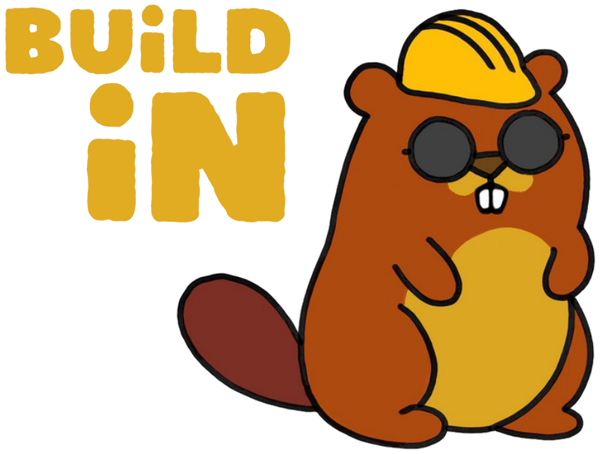
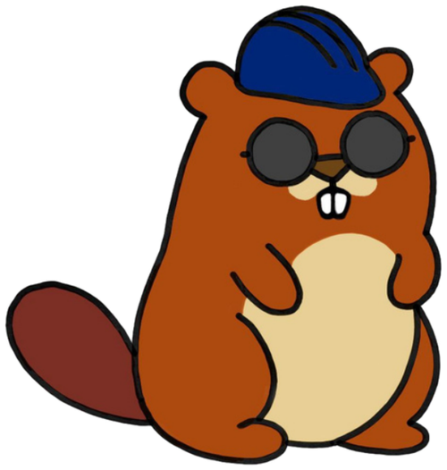

Hackathons & journées collaboratives
Nous organisons des événements où des bénévoles (développeurs, designers, curieux) se retrouvent pour avancer concrètement sur des projets.
Association loi 1901
BuildIn réunit des bénévoles le temps de hackathons et de journées collaboratives pour créer des outils numériques au service des associations, des collectivités et des acteurs de l'économie sociale et solidaire, notamment en milieu rural.

Notre objectif : promouvoir l'innovation et redynamiser les territoires en mettant des compétences techniques au service de celles et ceux qui en ont besoin.
Nous organisons des événements où des bénévoles (développeurs, designers, curieux) se retrouvent pour avancer concrètement sur des projets.
Sites web, outils, applications : nous concevons, réalisons et mettons en ligne des projets pour des associations, collectivités et structures de l'ESS.
Nous ne livrons pas une boîte noire : nous formons et accompagnons les bénéficiaires pour qu'ils restent autonomes sur leurs outils.
Site web · Courcelles-au-Bois
Refonte du site WordPress de GSF, ONG humanitaire de sages-femmes, médecins et professionnels de santé engagés pour la santé et les droits des femmes vulnérables, en France et à l'international.
Voir le site →Jeu · Chartres
Un jeu de soirée sur téléphone, conçu et développé en moins de 48 heures lors d'un week-end de création à Chartres.
Lire le récit du projet →
D'autres projets sont en chantier. Le prochain pourrait être le vôtre.
Vous portez un projet pour votre association ou votre commune ? Vous voulez rejoindre un prochain hackathon ? Écrivez-nous.
Nous écrireou copiez notre adresse : contact@buildinasso.org